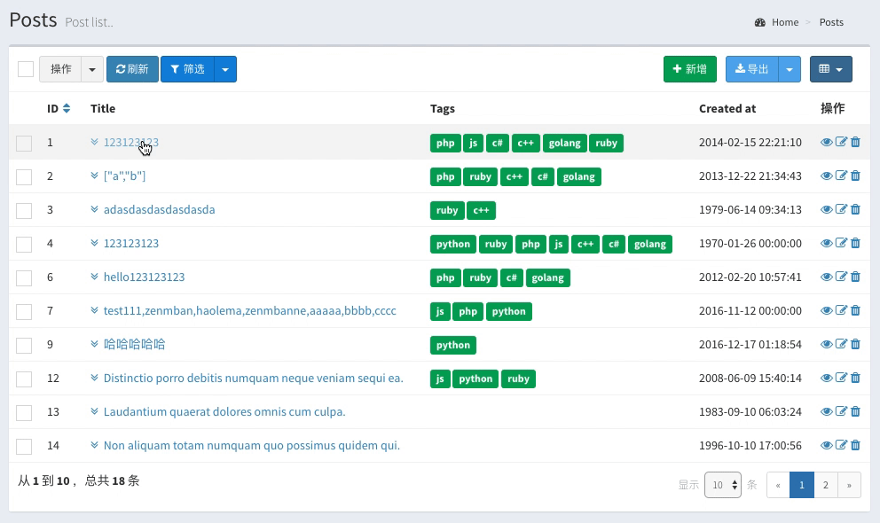
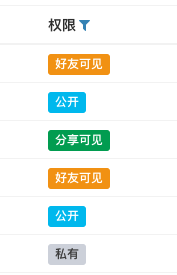
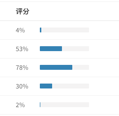
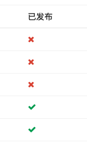
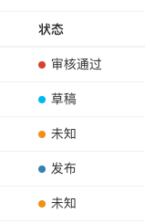
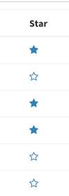

默认情况下，列显示数据库里面最原始的数据，如果需要修改列数据的显示，参考下面的方式
display()方法来通过传入的回调函数来处理当前列的值：
$table->column('title')->display(function ($title) {
return "<span style='color:blue'>$title</span>";
});在传入的匿名函数中可以通过任何方式对数据进行处理，另外匿名函数绑定了当前列的数据作为父对象，可以在函数中调用当前行的数据：
$table->column('first_name');
$table->column('last_name');
// 不存在的`full_name`字段
$table->column('full_name')->display(function () {
return $this->first_name . ' ' . $this->last_name;
});注意
要尽量避免在回调函数中去查询数据库或者调用外部接口，这样会在每一行渲染的时候运行查询或者外部接口的调用，严重影响性能，一个好的办法是给模型建立关联关系，然就用模型的
with方法将关联数据一并查询出来.
这个方法和display回调不同的是，它可以批量修改数据, 参考下面实例中的几个使用场景：
use Illuminate\Database\Eloquent\Collection;
$table->model()->collection(function (Collection $collection) {
// 1. 可以给每一列加字段，类似上面display回调的作用
foreach($collection as $item) {
$item->full_name = $item->first_name . ' ' . $item->last_name;
}
// 2. 给表格加一个序号列
foreach($collection as $index => $item) {
$item->number = $index;
}
// 3. 从外部接口获取数据填充到模型集合中
$ids = $collection->pluck('id');
$data = getDataFromApi($ids);
foreach($collection as $index => $item) {
$item->column_name = $data[$index];
}
// 最后一定要返回集合对象
return $collection;
});$collection表示当前这一个表格数据的模型集合， 你可以根据你的需要来读取或者修改它的数据。
如果这一列要根据某些条件来显示为不同的组件
$table->column('title')->display(function ($title, $column) {
// 如果这一列的status字段的值等于1，直接显示title字段
if ($this->status == 1) {
return $title;
}
// 否则显示为editable
return $column->editable();
});如果字段gender的取值为f、m，分别需要用女、男来显示
$table->column('gender')->using(['f' => '女', 'm' => '男']);如果需要将这一列的某些值替换为其它的内容来显示：
$table->column('cost')->replace([0 => '-']);使用view()方法让当前列渲染一个视图显示输出, 比如有一个视图resources/views/content.blade.php
<p>
{{ $value }}
{{ $model->id }}
</p>默认会传入视图的两个变量，$model为当前行的模型，$value为当前列的值
然后用下面的调用来渲染这个视图输出
$table->column('content')->view('content');用这个方法可以很好的渲染出复杂的列内容。
如果一行的字段比较多，可以通过列展开功能，来隐藏过多的内容。通过点击列来展开显示，或者点击展开相关的其它数据，比如下面的例子，用来展开一条文章下的10条最新评论：
use Encore\Admin\Widgets\Table;
$table->column('title', '标题')->expand(function ($model) {
$comments = $model->comments()->take(10)->get()->map(function ($comment) {
return $comment->only(['id', 'content', 'created_at']);
});
return new Table(['ID', '内容', '发布时间'], $comments->toArray());
});显示效果如下：

闭包函数中可以返回任何可被渲染的内容。
先定义可渲染类
use Illuminate\Contracts\Support\Renderable;
class ShowUser implements Renderable
{
public function render($key = null)
{
dump(User::find($key)->toArray());
}
}在render方法中，可以输出或者返回任何内容，将会显示在列表的modal弹出框中：
$table->expand('user', '标题')->modal(ShowUser::class);和列展开功能类似，可以通过弹出模态框来显示更多内容
$table->column('title', '标题')->modal('最新评论', function ($model) {
$comments = $model->comments()->take(10)->get()->map(function ($comment) {
return $comment->only(['id', 'content', 'created_at']);
});
return new Table(['ID', '内容', '发布时间'], $comments->toArray());
});显示效果如下：
先定义可渲染类
use Illuminate\Contracts\Support\Renderable;
class ShowUser implements Renderable
{
public function render($key = null)
{
dump(User::find($key)->toArray());
}
}在render方法中，可以输出或者返回任何内容，将会显示在列表的modal弹出框中：
$table->column('user', '标题')->modal(ShowUser::class);
// 或者
$table->column('user', '标题')->modal('标题。。', ShowUser::class);如果这一列数据是邮箱，你想要显示为Gavatar头像：
$table->column('email', '头像')->gravatar();
// 设置尺寸
$table->column('email', '头像')->gravatar(45);
如果这一列的数据是表示文件大小的字节数，可以通过调用filezise方法来显示更有可读性的文字
$table->column('file_size')->filesize();这样数值199812019将会显示为190.56 MB
如果这一列的数据存储的是上传文件的路径，那么可以通过调用downloadable方法来将这一列设置为可下载链接
$table->column('file_path')->downloadable();通过下面的调用，会在这一列的每一行文字前面出现一个复制icon，点击它可以复制它的值
$table->column('title')->copyable();通过下面的调用，会在这一列的每一行文字前面出现一个二维码icon，点击它可以展开一个小弹框，里面会显示这一列值的二维码编码图形
$table->column('link')->qrcode();如果picture字段保存的是图片的完整地址，或者路径，可以通过下面的方式将该列渲染为图片显示
支持多图显示，需要字段输出为数组。
$table->column('picture')->image();
//设置服务器和宽高
$table->column('picture')->image('http://xxx.com', 100, 100);
// 显示多图
$table->column('pictures')->display(function ($pictures) {
return json_decode($pictures, true);
})->image('http://xxx.com', 100, 100);
将字段显示为label标签, 如果字段输出为数组，会显示为多个label标签。
$table->column('name')->label();
//设置颜色，默认`success`,可选`danger`、`warning`、`info`、`primary`、`default`、`success`
$table->column('name')->label('danger');
// 接收数组
$table->column('keywords')->label();如果需要将status字段的不同的值显示为不同颜色的label
$table->column('status')->label([
1 => 'default',
2 => 'warning',
3 => 'success',
4 => 'info',
]);将字段显示为font-awesome图标, 更多图标参考 http://fontawesome.io/icons/
$table->column('status')->icon([
0 => 'toggle-off',
1 => 'toggle-on',
], $default = '');将字段显示为一个链接。
// link方法不传参数时，链接的`href`和`text`都是当前列的值
$table->column('homepage')->link();
// 或者传入一个指定的href
$table->column('homepage')->link($href);将字段显示为一个表格，需要当前列的值为一个二维数组
// table方法不传参数时，表格的title为二维数组每一列的key
$table->column('settings')->table();
// 可以通过下面的方法指定每一列的key
$table->column('settings')->table(['key' => '键', 'val' => '值']);
将字段显示为一个进度条，需要当前列的值为一个数值，默认的最大值为100，
$table->column('progress')->progressBar();
// 可选参数
$table->column('progress')->progressBar($style = 'primary', $size = 'sm', $max = 100);$style用来设置样式，可选值danger、warning、info、primary、default、success
$size用来设置尺寸, 可选值为sm、xs、xxs，$max用来设置最大范围。
$table->column('status')->loading([1, 2, 3]);如果status的值为[1, 2, 3]之一，会显示为一个loading加载icon。
显示其它的字段值显示情况
$table->column('status')->loading([1, 2, 3], [
4 => '完成'
]);如果字段值为图片数组，可以用下面的调用显示为图片轮播组件
$table->column('images')->carousel();
// 设置显示尺寸和图片服务器
$table->column('images')->carousel($width = 300, int $height = 200, $server);如果字段值为时间戳，可以用date方法格式化输出
$table->column('created_at')->date('Y-m-d');其中格式参数请参考PHP的date函数

将这一列转为bool值之后显示为✓和✗.
$table->column('approved')->bool();你也可以按照这一列的值指定显示，比如字段的值为Y和N表示true和false
$table->column('approved')->bool(['Y' => true, 'N' => false]);
这个方法用来在列文字前面加上一个带颜色的圆点，以提供更直观清晰的视觉效果
$table->column('status')->using([
1 => '审核通过',
2 => '草稿',
3 => '发布',
4 => '其它',
], '未知')->dot([
1 => 'danger',
2 => 'info',
3 => 'primary',
4 => 'success',
], 'warning');按照上面的代码，使用using方法映射了显示文字，再使用dot设置圆点的颜色，颜色的取值有danger、info、primary、success、warning这五个选择。

注意：在使用这个方法之前，请先阅读【自定义操作-行操作】
这个功能可以将某一列显示为一个可操作的按钮，比如上图所示是一个标星和取消标星的列操作，点击这一列的星标图标之后, 后台会切换字段的状态，页面图标也跟着切换，具体实现代码如下：
<?php
namespace App\Admin\Actions\Document;
use App\Models\Document;
use Encore\Admin\Actions\RowAction;
class StarDocument extends RowAction
{
// 在页面点击这一列的图表之后，发送请求到后端的handle方法执行
public function handle(Document $document)
{
// 切换`star`字段的值并保存
$document->star = (int) !$document->star;
$document->save();
// 保存之后返回新的html到前端显示
$html = $document->star ? "<i class=\"fa fa-star-o\"></i>" : "<i class=\"fa fa-star\"></i>";
return $this->response()->html($html);
}
// 这个方法来根据`star`字段的值来在这一列显示不同的图标
public function display($star)
{
return $star ? "<i class=\"fa fa-star-o\"></i>" : "<i class=\"fa fa-star\"></i>";
}
}最后在列表中显示这一列：
use App\Admin\Actions\Document\StarDocument;
$table->column('star')->action(StarDocument::class);